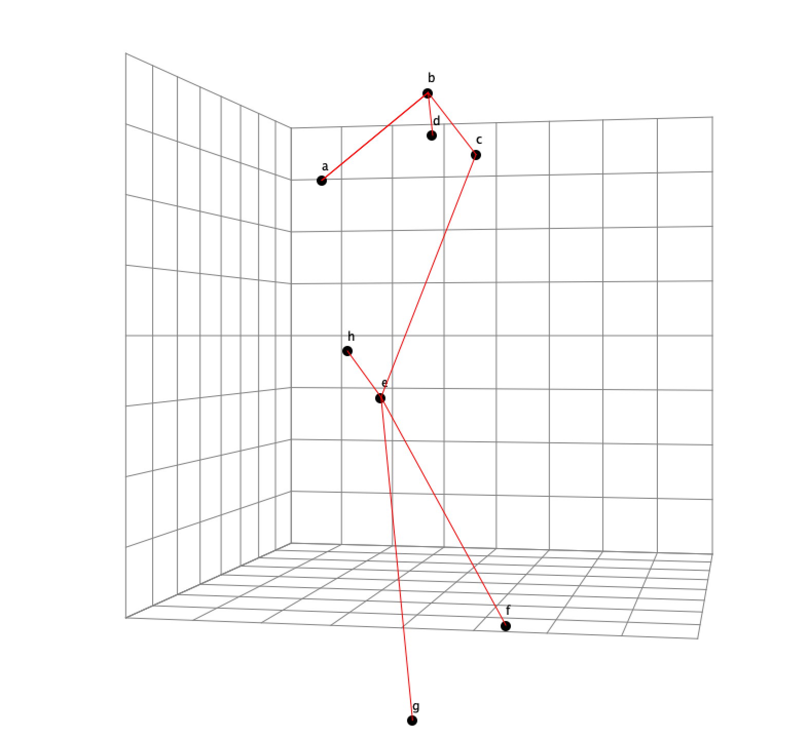

Personal Projects I'm proud of
Lisp interpreter
github.com/exseneca/jispAfter working through crafting interpreters by Robert Nystrom I went and wrote this.
3D graph viewer
github.com/exseneca/high-dimensional-drawAfter reading about some graph drawing algorithms I thought it would be cool to implement a fast one. I read Graph Drawing by High-Dimensional Embedding implemented it in Clojure and build a desktop UI for viewing the graph in 3D.
River
github.com/exseneca/riverI wanted to build a game involving water flowing. This was the the foundation. Uses cubic splines acting as the flow forces and numerical analysis for collision detection with the banks.